2024 Higher Chemistry - Paper 2 questions
Source: Scottish Qualifications Authority (SQA) / Qualifications Scotland. This is a StemInteract HTML companion, not an official HTML edition. Selectable text is supplied alongside original page images. Use the images or original PDF for equations, powers, fractions, vector notation, tables and diagrams; text extraction cannot fully preserve mathematical layout.
Jump to a question
PDF page 1
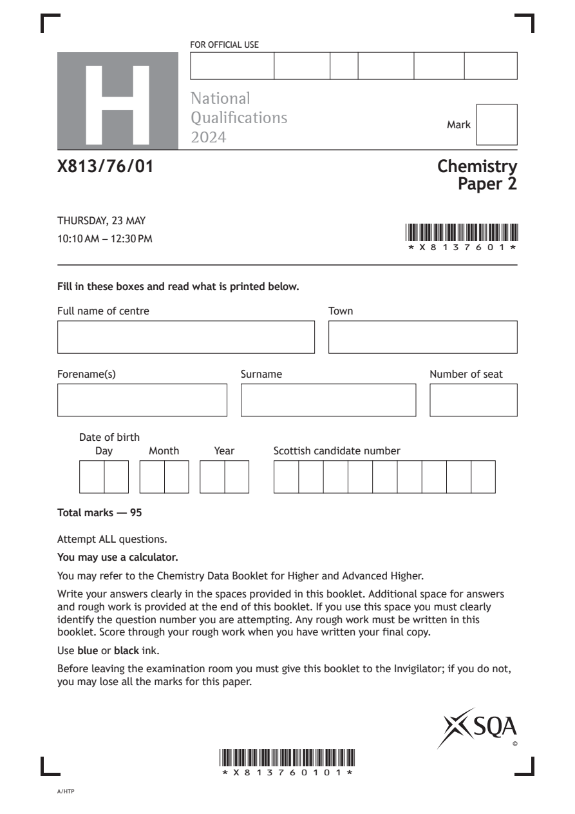
Selectable page text
FOR OFFICIAL USE
H
National
Qualications
Mark
2024
X813/76/01 Chemistry
Paper 2
THURSDAY, 23 MAY
10:10 AM – 12:30 PM
*X8137601*
Fill in these boxes and read what is printed below.
Full name of centre Town
Forename(s) Surname Number of seat
Date of birth
Day Month Year Scottish candidate number
Total marks — 95
Attempt ALL questions.
You may use a calculator.
You may refer to the Chemistry Data Booklet for Higher and Advanced Higher.
Write your answers clearly in the spaces provided in this booklet. Additional space for answers
and rough work is provided at the end of this booklet. If you use this space you must clearly
identify the question number you are attempting. Any rough work must be written in this
booklet. Score through your rough work when you have written your final copy.
Use blue or black ink.
Before leaving the examination room you must give this booklet to the Invigilator; if you do not,
you may lose all the marks for this paper.
©
*X813760101*
A/HTPPDF page 2
Paper 2, Question 1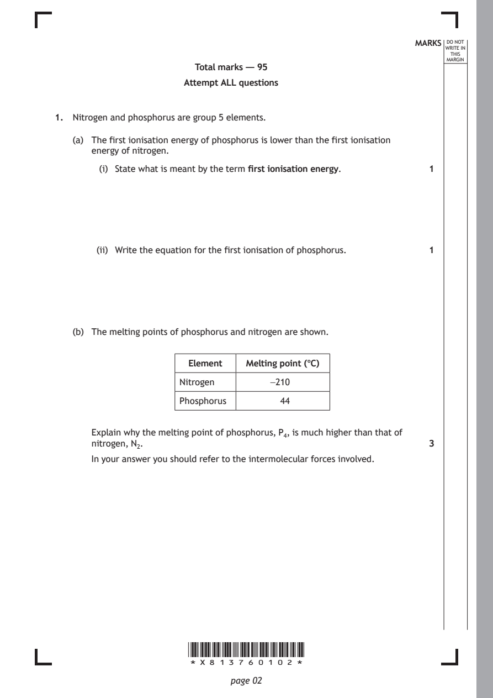
Selectable page text
MARKS _{W}^{D}_{R}^{O}_{I} _{T}^{N}OT
E IN
THIS
MARGIN
Total marks — 95
Attempt ALL questions
1. Nitrogen and phosphorus are group 5 elements.
(a) The first ionisation energy of phosphorus is lower than the first ionisation
energy of nitrogen.
(i) State what is meant by the term first ionisation energy. 1
(ii) Write the equation for the first ionisation of phosphorus. 1
(b) The melting points of phosphorus and nitrogen are shown.
Element Melting point (°C)
Nitrogen -210
Phosphorus 44
Explain why the melting point of phosphorus, P₄, is much higher than that of
nitrogen, N₂. 3
In your answer you should refer to the intermolecular forces involved.
*X813760102*
page 02PDF page 3
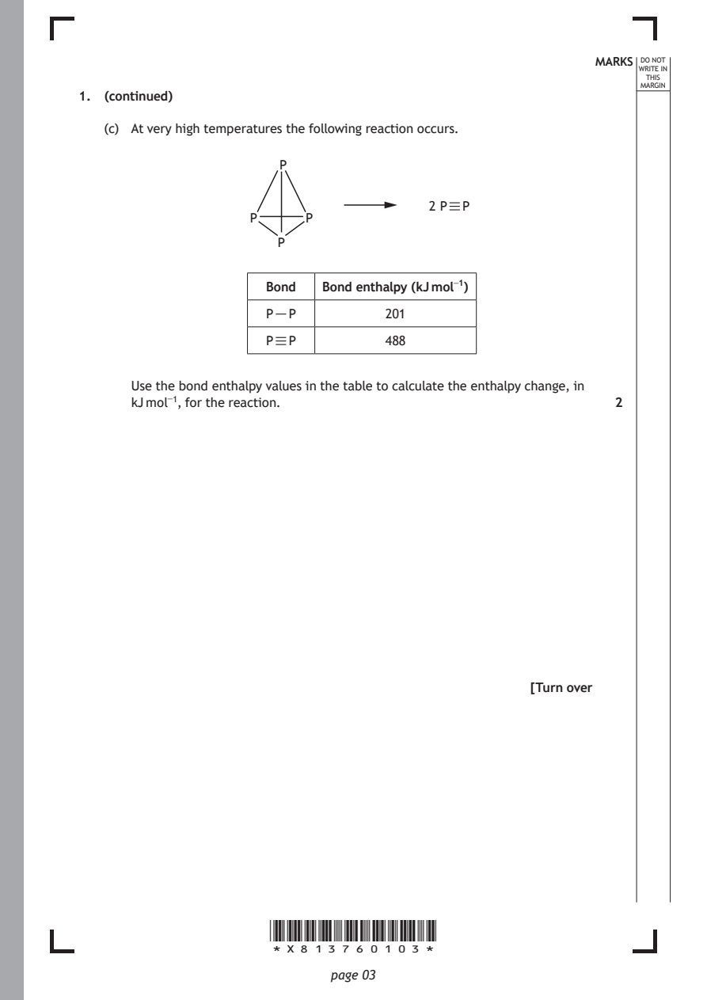
Selectable page text
MARKS _{W}^{D}_{R}^{O}_{I} _{T}^{N}OT
E IN
THIS
MARGIN
1. (continued)
(c) At very high temperatures the following reaction occurs.
P
2 P P
P P
P
Bond Bond enthalpy (kJ mol⁻¹)
P P 201
P P 488
Use the bond enthalpy values in the table to calculate the enthalpy change, in
kJ mol⁻¹, for the reaction. 2
[Turn over
*X813760103*
page 03PDF page 4
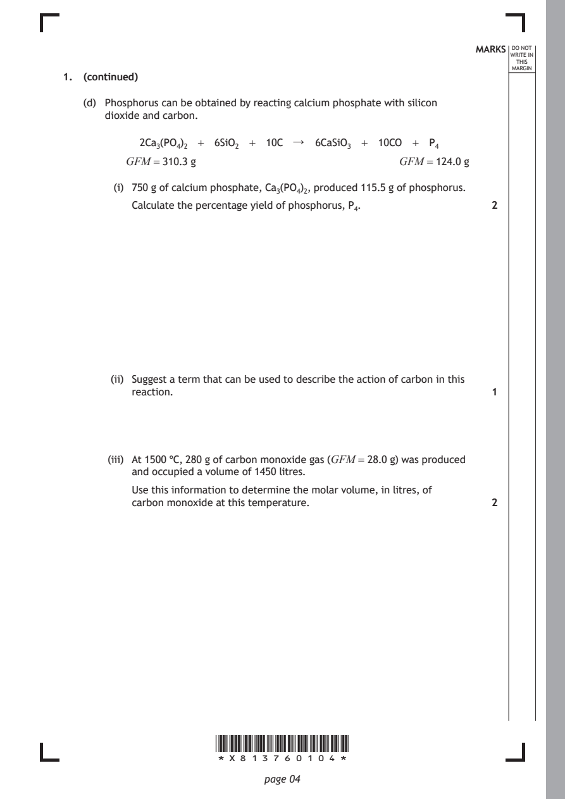
Selectable page text
MARKS _{W}^{D}_{R}^{O}_{I} _{T}^{N}OT
E IN
THIS
MARGIN
1. (continued)
(d) Phosphorus can be obtained by reacting calcium phosphate with silicon
dioxide and carbon.
2Ca₃(PO₄)₂ + 6SiO₂ + 10C ↓ 6CaSiO₃ + 10CO + P₄
GFM = 310.3 g GFM = 124.0 g
(i) 750 g of calcium phosphate, Ca₃(PO₄)₂, produced 115.5 g of phosphorus.
Calculate the percentage yield of phosphorus, P₄. 2
(ii) Suggest a term that can be used to describe the action of carbon in this
reaction. 1
(iii) At 1500 °C, 280 g of carbon monoxide gas (GFM = 28.0 g) was produced
and occupied a volume of 1450 litres.
Use this information to determine the molar volume, in litres, of
carbon monoxide at this temperature. 2
*X813760104*
page 04PDF page 5
Paper 2, Question 2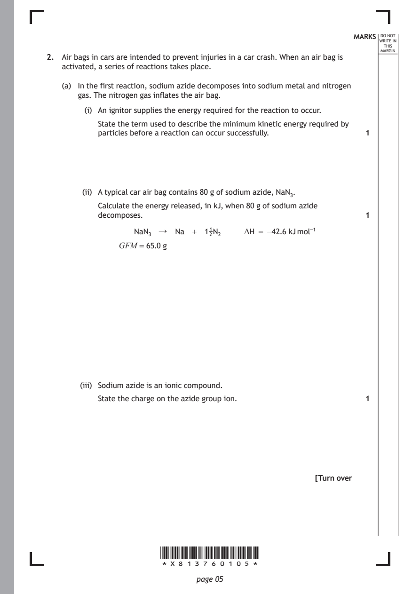
Selectable page text
MARKS _{W}^{D}_{R}^{O}_{I} _{T}^{N}OT
E IN
THIS
MARGIN
2. Air bags in cars are intended to prevent injuries in a car crash. When an air bag is
activated, a series of reactions takes place.
(a) In the first reaction, sodium azide decomposes into sodium metal and nitrogen
gas. The nitrogen gas inflates the air bag.
(i) An ignitor supplies the energy required for the reaction to occur.
State the term used to describe the minimum kinetic energy required by
particles before a reaction can occur successfully. 1
(ii) A typical car air bag contains 80 g of sodium azide, NaN₃.
Calculate the energy released, in kJ, when 80 g of sodium azide
decomposes. 1
NaN₃ ↓ Na + 1₂¹N₂ ΔH = -42.6 kJ mol⁻¹
GFM = 65.0 g
(iii) Sodium azide is an ionic compound.
State the charge on the azide group ion. 1
[Turn over
*X813760105*
page 05PDF page 6
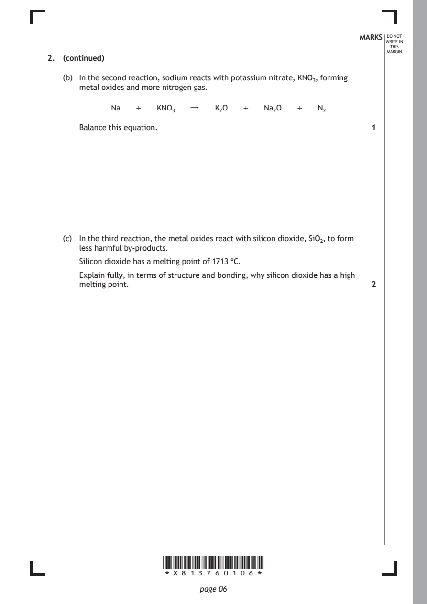
Selectable page text
MARKS _{W}^{D}_{R}^{O}_{I} _{T}^{N}OT
E IN
THIS
MARGIN
2. (continued)
(b) In the second reaction, sodium reacts with potassium nitrate, KNO₃, forming
metal oxides and more nitrogen gas.
Na + KNO₃ ↓ K₂O + Na₂O + N₂
Balance this equation. 1
(c) In the third reaction, the metal oxides react with silicon dioxide, SiO₂, to form
less harmful by-products.
Silicon dioxide has a melting point of 1713 °C.
Explain fully, in terms of structure and bonding, why silicon dioxide has a high
melting point. 2
*X813760106*
page 06PDF page 7
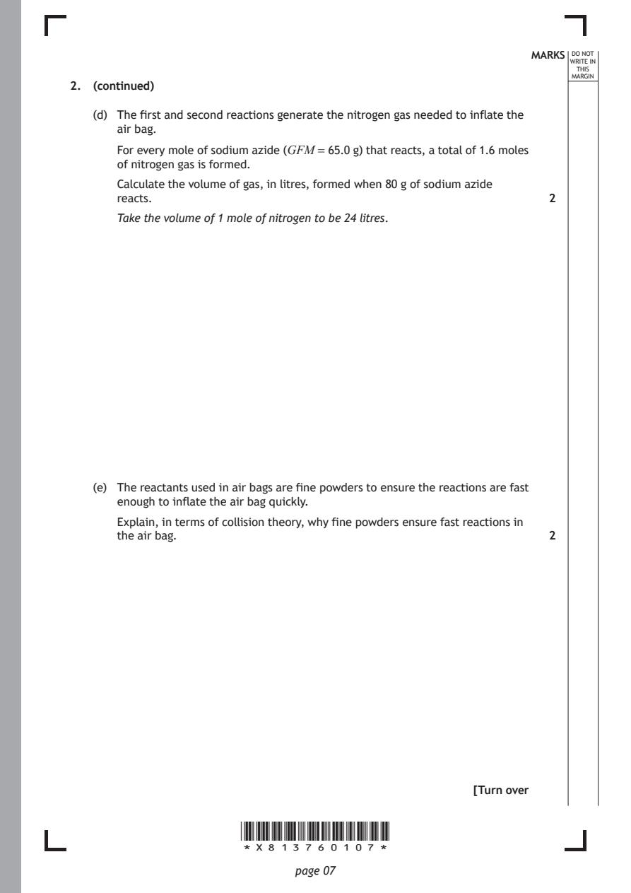
Selectable page text
MARKS _{W}^{D}_{R}^{O}_{I} _{T}^{N}OT
E IN
THIS
MARGIN
2. (continued)
(d) The first and second reactions generate the nitrogen gas needed to inflate the
air bag.
For every mole of sodium azide (GFM = 65.0 g) that reacts, a total of 1.6 moles
of nitrogen gas is formed.
Calculate the volume of gas, in litres, formed when 80 g of sodium azide
reacts. 2
Take the volume of 1 mole of nitrogen to be 24 litres.
(e) The reactants used in air bags are fine powders to ensure the reactions are fast
enough to inflate the air bag quickly.
Explain, in terms of collision theory, why fine powders ensure fast reactions in
the air bag. 2
[Turn over
*X813760107*
page 07PDF page 8
Paper 2, Question 3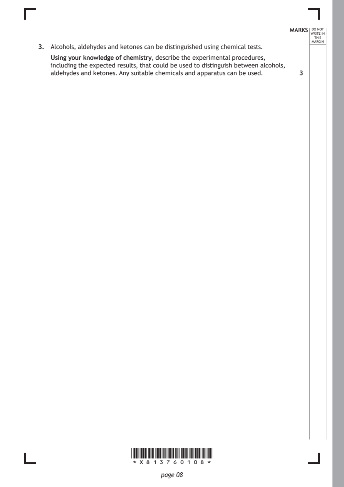
Selectable page text
MARKS _{W}^{D}_{R}^{O}_{I} _{T}^{N}OT
E IN
THIS
MARGIN
3. Alcohols, aldehydes and ketones can be distinguished using chemical tests.
Using your knowledge of chemistry, describe the experimental procedures,
including the expected results, that could be used to distinguish between alcohols,
aldehydes and ketones. Any suitable chemicals and apparatus can be used. 3
*X813760108*
page 08PDF page 9
Paper 2, Question 4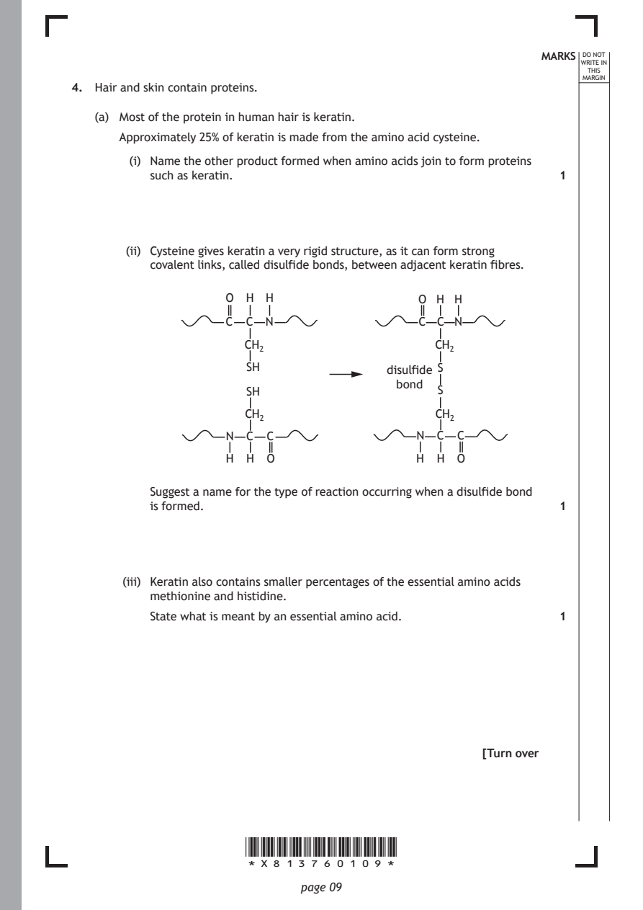
Selectable page text
MARKS _{W}^{D}_{R}^{O}_{I} _{T}^{N}OT
E IN
THIS
MARGIN
4. Hair and skin contain proteins.
(a) Most of the protein in human hair is keratin.
Approximately 25% of keratin is made from the amino acid cysteine.
(i) Name the other product formed when amino acids join to form proteins
such as keratin. 1
(ii) Cysteine gives keratin a very rigid structure, as it can form strong
covalent links, called disulfide bonds, between adjacent keratin fibres.
O H H O H H
C C N C C N
CH₂ CH₂
SH disulfide S
bond
SH S
CH₂ CH₂
N C C N C C
H H O H H O
Suggest a name for the type of reaction occurring when a disulfide bond
is formed. 1
(iii) Keratin also contains smaller percentages of the essential amino acids
methionine and histidine.
State what is meant by an essential amino acid. 1
[Turn over
*X813760109*
page 09PDF page 10
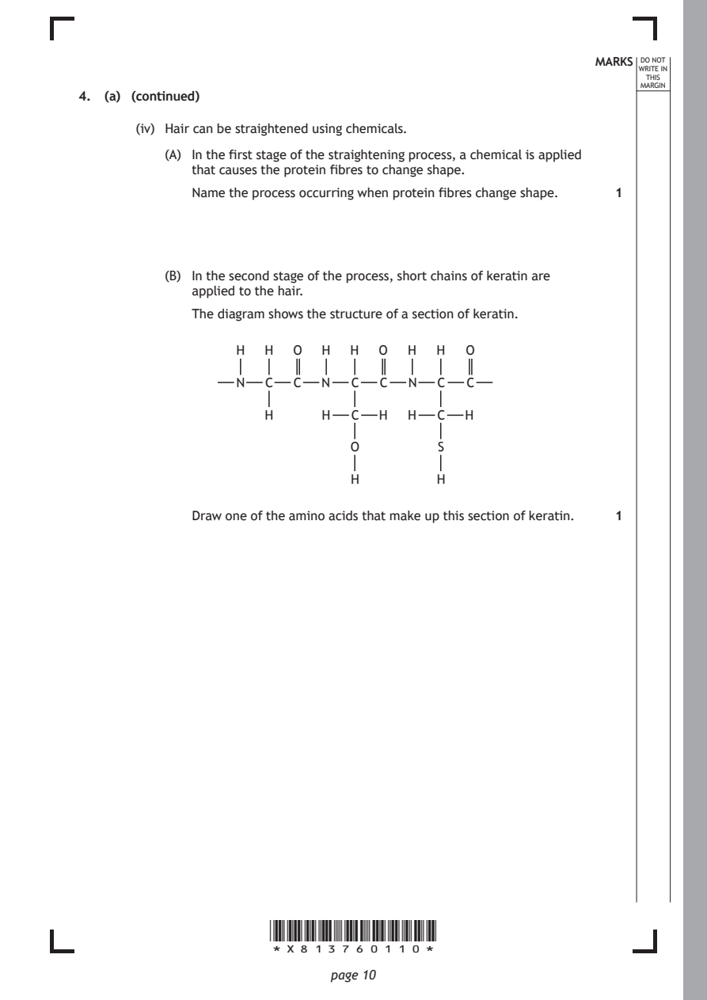
Selectable page text
MARKS _{W}^{D}_{R}^{O}_{I} _{T}^{N}OT
E IN
THIS
MARGIN
4. (a) (continued)
(iv) Hair can be straightened using chemicals.
(A) In the first stage of the straightening process, a chemical is applied
that causes the protein fibres to change shape.
Name the process occurring when protein fibres change shape. 1
(B) In the second stage of the process, short chains of keratin are
applied to the hair.
The diagram shows the structure of a section of keratin.
H H O H H O H H O
N C C N C C N C C
H H C H H C H
O S
H H
Draw one of the amino acids that make up this section of keratin. 1
*X813760110*
page 10PDF page 11
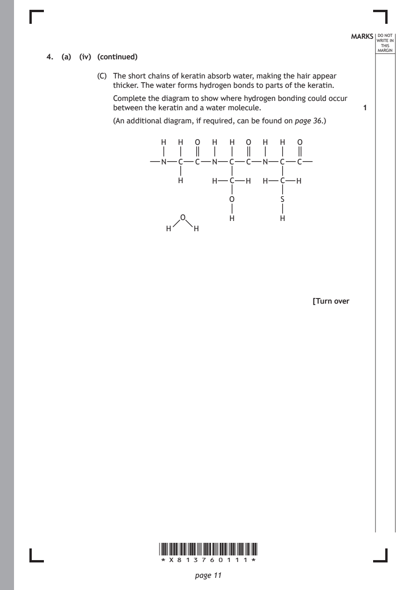
Selectable page text
MARKS _{W}^{D}_{R}^{O}_{I} _{T}^{N}OT
E IN
THIS
MARGIN
4. (a) (iv) (continued)
(C) The short chains of keratin absorb water, making the hair appear
thicker. The water forms hydrogen bonds to parts of the keratin.
Complete the diagram to show where hydrogen bonding could occur
between the keratin and a water molecule. 1
(An additional diagram, if required, can be found on page 36.)
H H O H H O H H O
N C C N C C N C C
H H C H H C H
O S
O H H
H H
[Turn over
*X813760111*
page 11PDF page 12
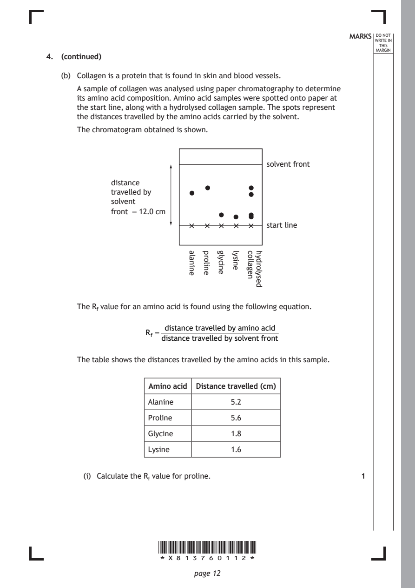
Selectable page text
MARKS _{W}^{D}_{R}^{O}_{I} _{T}^{N}OT
E IN
THIS
MARGIN
4. (continued)
(b) Collagen is a protein that is found in skin and blood vessels.
A sample of collagen was analysed using paper chromatography to determine
its amino acid composition. Amino acid samples were spotted onto paper at
the start line, along with a hydrolysed collagen sample. The spots represent
the distances travelled by the amino acids carried by the solvent.
The chromatogram obtained is shown.
solvent front
start line
*X813760112*
page 12
alanine proline glycine lysine collagen hydrolysed
distance
travelled by
solvent
front = 12.0 cm
The R_{f} value for an amino acid is found using the following equation.
distance travelled by amino acid
R_{f} =
distance travelled by solvent front
The table shows the distances travelled by the amino acids in this sample.
Amino acid Distance travelled (cm)
Alanine 5.2
Proline 5.6
Glycine 1.8
Lysine 1.6
(i) Calculate the R_{f} value for proline. 1PDF page 13
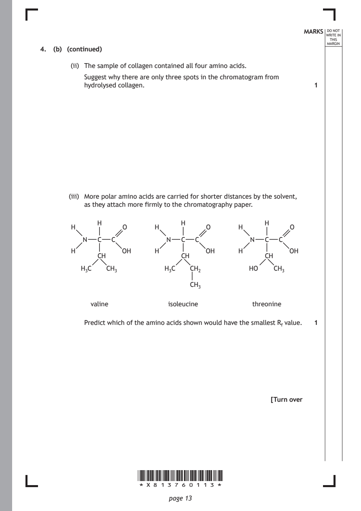
Selectable page text
MARKS _{W}^{D}_{R}^{O}_{I} _{T}^{N}OT
E IN
THIS
MARGIN
4. (b) (continued)
(ii) The sample of collagen contained all four amino acids.
Suggest why there are only three spots in the chromatogram from
hydrolysed collagen. 1
(iii) More polar amino acids are carried for shorter distances by the solvent,
as they attach more firmly to the chromatography paper.
H H H
H O H O H O
N C C N C C N C C
H OH H OH H OH
CH CH CH
H₃C CH₃ H₃C CH₂ HO CH₃
CH₃
valine isoleucine threonine
Predict which of the amino acids shown would have the smallest R_{f} value. 1
[Turn over
*X813760113*
page 13PDF page 14
Paper 2, Question 5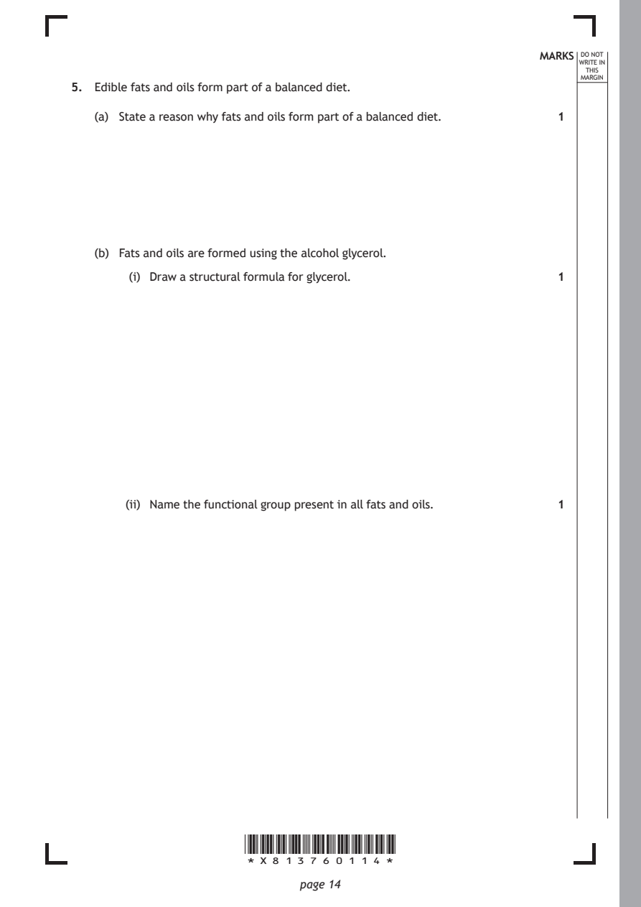
Selectable page text
MARKS _{W}^{D}_{R}^{O}_{I} _{T}^{N}OT
E IN
THIS
MARGIN
5. Edible fats and oils form part of a balanced diet.
(a) State a reason why fats and oils form part of a balanced diet. 1
(b) Fats and oils are formed using the alcohol glycerol.
(i) Draw a structural formula for glycerol. 1
(ii) Name the functional group present in all fats and oils. 1
*X813760114*
page 14PDF page 15
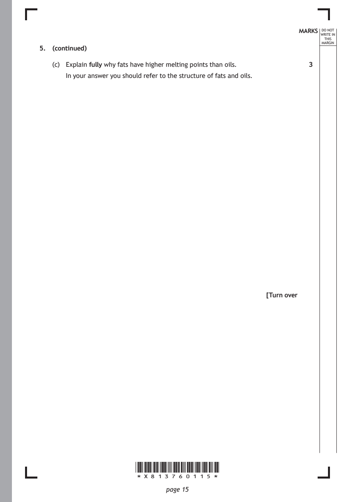
Selectable page text
MARKS _{W}^{D}_{R}^{O}_{I} _{T}^{N}OT
E IN
THIS
MARGIN
5. (continued)
(c) Explain fully why fats have higher melting points than oils. 3
In your answer you should refer to the structure of fats and oils.
[Turn over
*X813760115*
page 15PDF page 16
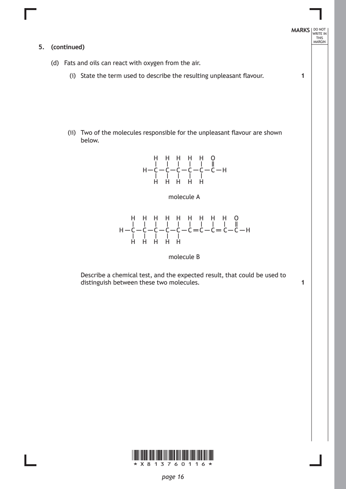
Selectable page text
MARKS _{W}^{D}_{R}^{O}_{I} _{T}^{N}OT
E IN
THIS
MARGIN
5. (continued)
(d) Fats and oils can react with oxygen from the air.
(i) State the term used to describe the resulting unpleasant flavour. 1
(ii) Two of the molecules responsible for the unpleasant flavour are shown
below.
H H H H H O
H C C C C C C H
H H H H H
molecule A
H H H H H H H H H O
H C C C C C C C C C C H
H H H H H
molecule B
Describe a chemical test, and the expected result, that could be used to
distinguish between these two molecules. 1
*X813760116*
page 16PDF page 17
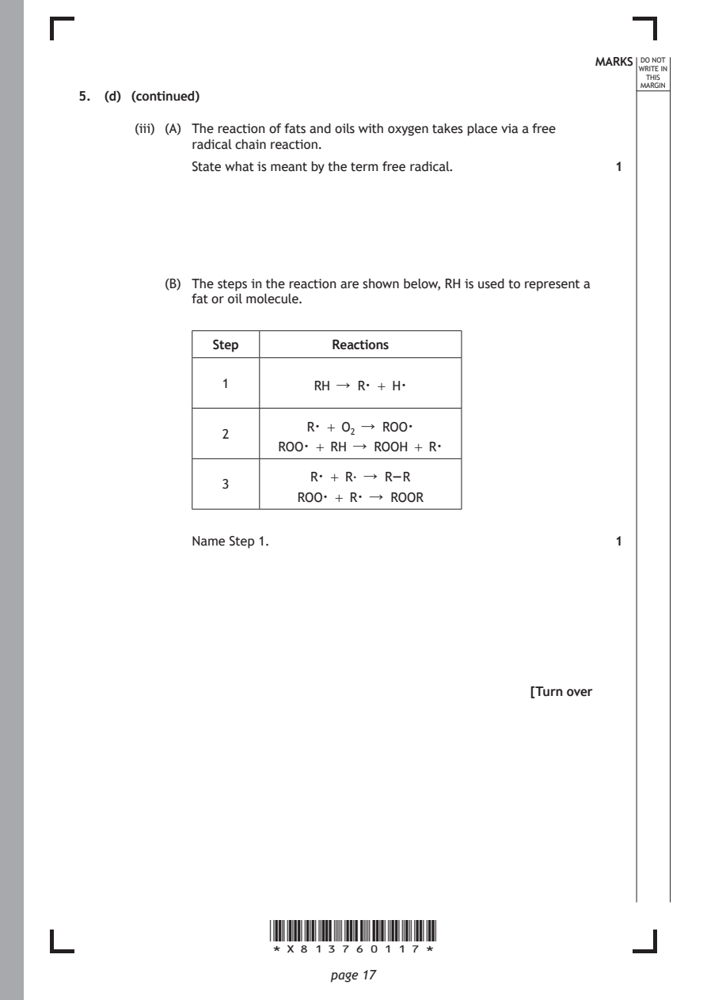
Selectable page text
MARKS _{W}^{D}_{R}^{O}_{I} _{T}^{N}OT
E IN
THIS
MARGIN
5. (d) (continued)
(iii) (A) The reaction of fats and oils with oxygen takes place via a free
radical chain reaction.
State what is meant by the term free radical. 1
(B) The steps in the reaction are shown below, RH is used to represent a
fat or oil molecule.
Step Reactions
1 RH ↓ R· + H·
R· + O₂ ↓ ROO·
2
ROO· + RH ↓ ROOH + R·
R· + R· ↓ R–R
3
ROO· + R· ↓ ROOR
Name Step 1. 1
[Turn over
*X813760117*
page 17PDF page 18
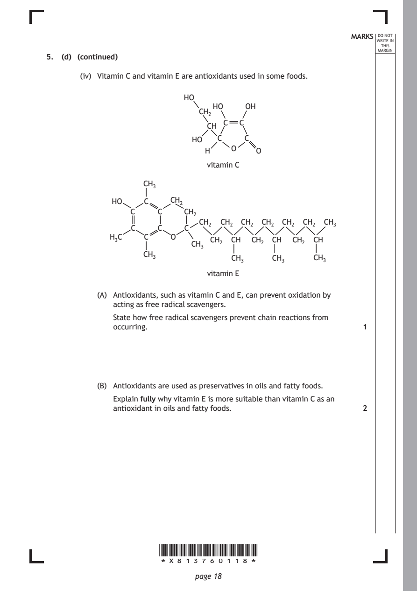
Selectable page text
MARKS _{W}^{D}_{R}^{O}_{I} _{T}^{N}OT
E IN
THIS
MARGIN
5. (d) (continued)
(iv) Vitamin C and vitamin E are antioxidants used in some foods.
HO
HO OH
CH₂
C C
CH
HO C C
O
H O
vitamin C
CH₃
HO C CH₂
C C CH₂
CH₂ CH₂ CH₂ CH₂ CH₂ CH₂ CH₃
C C C
H₃C C O
CH₂ CH CH₂ CH CH₂ CH
CH₃
CH₃
CH₃ CH₃ CH₃
vitamin E
(A) Antioxidants, such as vitamin C and E, can prevent oxidation by
acting as free radical scavengers.
State how free radical scavengers prevent chain reactions from
occurring. 1
(B) Antioxidants are used as preservatives in oils and fatty foods.
Explain fully why vitamin E is more suitable than vitamin C as an
antioxidant in oils and fatty foods. 2
*X813760118*
page 18PDF page 19
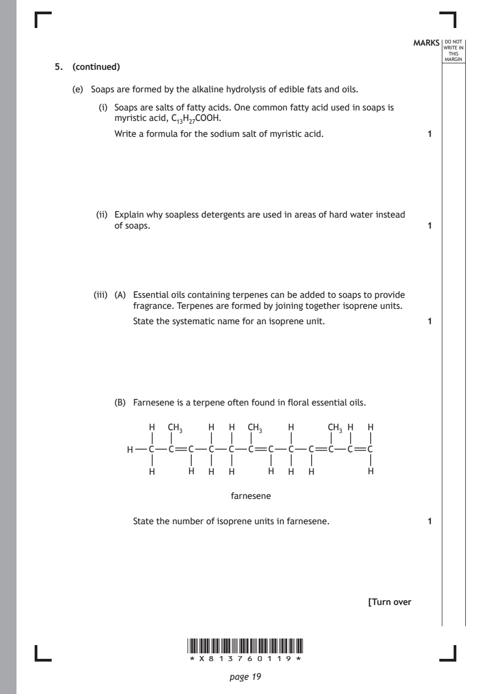
Selectable page text
MARKS _{W}^{D}_{R}^{O}_{I} _{T}^{N}OT
E IN
THIS
MARGIN
5. (continued)
(e) Soaps are formed by the alkaline hydrolysis of edible fats and oils.
(i) Soaps are salts of fatty acids. One common fatty acid used in soaps is
myristic acid, C₁₃H₂₇COOH.
Write a formula for the sodium salt of myristic acid. 1
(ii) Explain why soapless detergents are used in areas of hard water instead
of soaps. 1
(iii) (A) Essential oils containing terpenes can be added to soaps to provide
fragrance. Terpenes are formed by joining together isoprene units.
State the systematic name for an isoprene unit. 1
(B) Farnesene is a terpene often found in floral essential oils.
H CH₃ H H CH₃ H CH₃ H H
H C C C C C C C C C C C C
H H H H H H H H
farnesene
State the number of isoprene units in farnesene. 1
[Turn over
*X813760119*
page 19PDF page 20
Paper 2, Question 6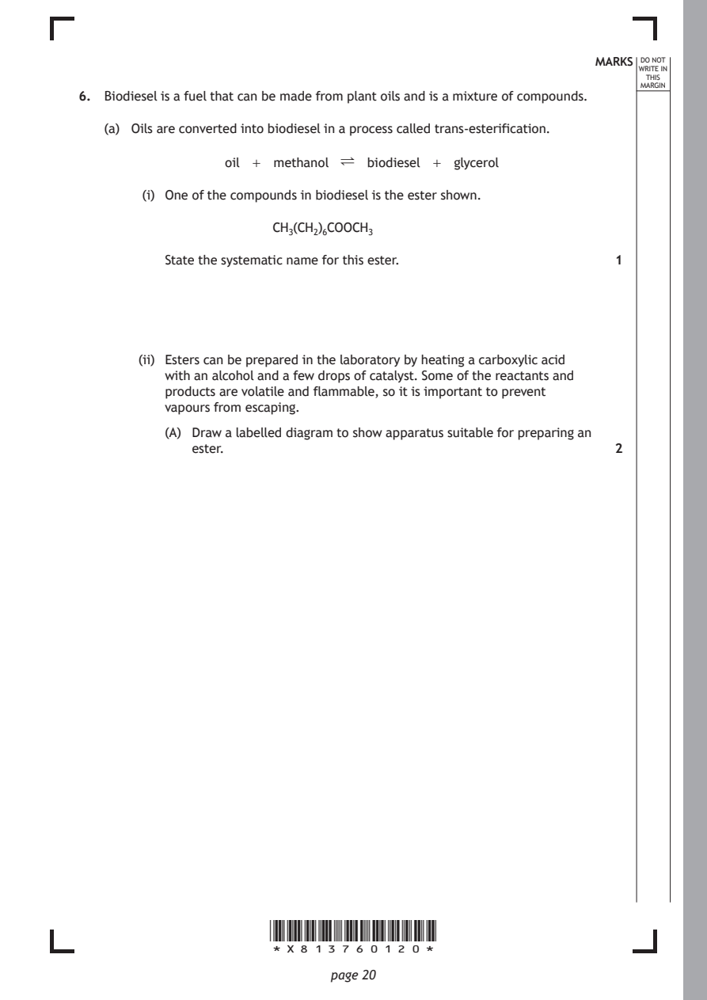
Selectable page text
MARKS _{W}^{D}_{R}^{O}_{I} _{T}^{N}OT
E IN
THIS
MARGIN
6. Biodiesel is a fuel that can be made from plant oils and is a mixture of compounds.
(a) Oils are converted into biodiesel in a process called trans-esterification.
oil + methanol ∏ biodiesel + glycerol
(i) One of the compounds in biodiesel is the ester shown.
CH₃(CH₂)₆COOCH₃
State the systematic name for this ester. 1
(ii) Esters can be prepared in the laboratory by heating a carboxylic acid
with an alcohol and a few drops of catalyst. Some of the reactants and
products are volatile and flammable, so it is important to prevent
vapours from escaping.
(A) Draw a labelled diagram to show apparatus suitable for preparing an
ester. 2
*X813760120*
page 20PDF page 21
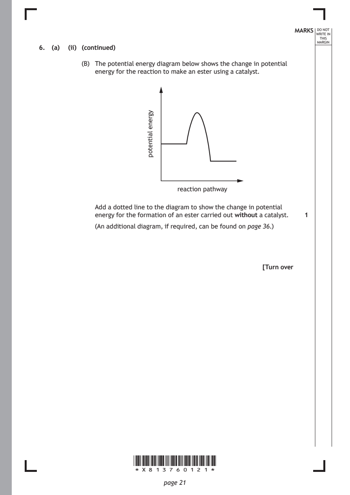
Selectable page text
MARKS _{W}^{D}_{R}^{O}_{I} _{T}^{N}OT
E IN
THIS
MARGIN
6. (a) (ii) (continued)
(B) The potential energy diagram below shows the change in potential
energy for the reaction to make an ester using a catalyst.
reaction pathway
*X813760121*
page 21
ygrene
laitnetop
Add a dotted line to the diagram to show the change in potential
energy for the formation of an ester carried out without a catalyst. 1
(An additional diagram, if required, can be found on page 36.)
[Turn overPDF page 22
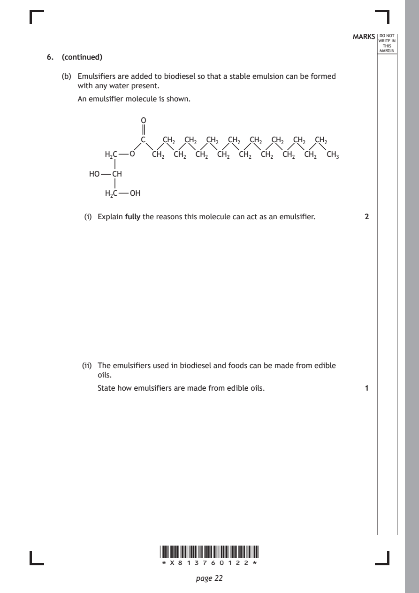
Selectable page text
MARKS _{W}^{D}_{R}^{O}_{I} _{T}^{N}OT
E IN
THIS
MARGIN
6. (continued)
(b) Emulsifiers are added to biodiesel so that a stable emulsion can be formed
with any water present.
An emulsifier molecule is shown.
O
C CH₂ CH₂ CH₂ CH₂ CH₂ CH₂ CH₂ CH₂
H₂C O CH₂ CH₂ CH₂ CH₂ CH₂ CH₂ CH₂ CH₂ CH₃
HO CH
H₂C OH
(i) Explain fully the reasons this molecule can act as an emulsifier. 2
(ii) The emulsifiers used in biodiesel and foods can be made from edible
oils.
State how emulsifiers are made from edible oils. 1
*X813760122*
page 22PDF page 23
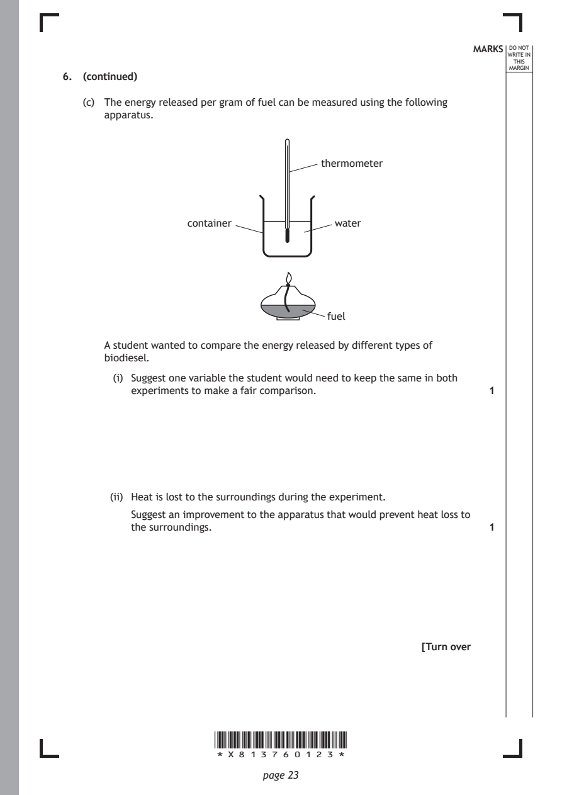
Selectable page text
MARKS _{W}^{D}_{R}^{O}_{I} _{T}^{N}OT
E IN
THIS
MARGIN
6. (continued)
(c) The energy released per gram of fuel can be measured using the following
apparatus.
thermometer
container water
fuel
A student wanted to compare the energy released by different types of
biodiesel.
(i) Suggest one variable the student would need to keep the same in both
experiments to make a fair comparison. 1
(ii) Heat is lost to the surroundings during the experiment.
Suggest an improvement to the apparatus that would prevent heat loss to
the surroundings. 1
[Turn over
*X813760123*
page 23PDF page 24
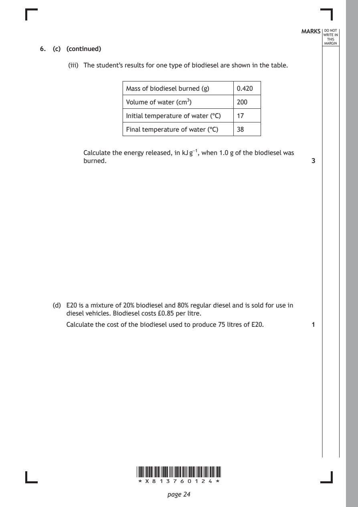
Selectable page text
MARKS _{W}^{D}_{R}^{O}_{I} _{T}^{N}OT
E IN
THIS
MARGIN
6. (c) (continued)
(iii) The student’s results for one type of biodiesel are shown in the table.
Mass of biodiesel burned (g) 0.420
Volume of water (cm³) 200
Initial temperature of water (°C) 17
Final temperature of water (°C) 38
Calculate the energy released, in kJ g⁻¹, when 1.0 g of the biodiesel was
burned. 3
(d) E20 is a mixture of 20% biodiesel and 80% regular diesel and is sold for use in
diesel vehicles. Biodiesel costs £0.85 per litre.
Calculate the cost of the biodiesel used to produce 75 litres of E20. 1
*X813760124*
page 24PDF page 25
Paper 2, Question 7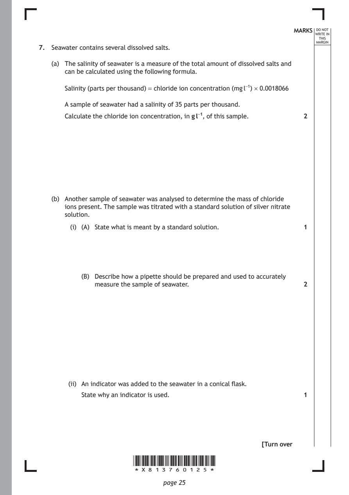
Selectable page text
MARKS _{W}^{D}_{R}^{O}_{I} _{T}^{N}OT
E IN
THIS
MARGIN
7. Seawater contains several dissolved salts.
(a) The salinity of seawater is a measure of the total amount of dissolved salts and
can be calculated using the following formula.
Salinity (parts per thousand) = chloride ion concentration (mg l⁻¹) × 0.0018066
A sample of seawater had a salinity of 35 parts per thousand.
Calculate the chloride ion concentration, in g l⁻¹, of this sample. 2
(b) Another sample of seawater was analysed to determine the mass of chloride
ions present. The sample was titrated with a standard solution of silver nitrate
solution.
(i) (A) State what is meant by a standard solution. 1
(B) Describe how a pipette should be prepared and used to accurately
measure the sample of seawater. 2
(ii) An indicator was added to the seawater in a conical flask.
State why an indicator is used. 1
[Turn over
*X813760125*
page 25PDF page 26
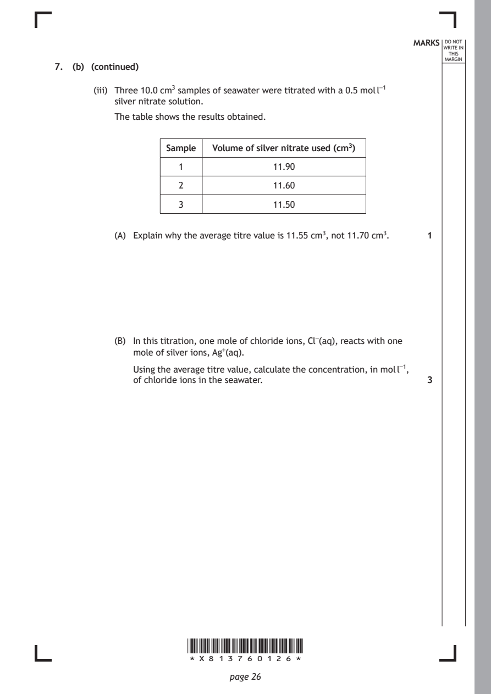
Selectable page text
MARKS _{W}^{D}_{R}^{O}_{I} _{T}^{N}OT
E IN
THIS
MARGIN
7. (b) (continued)
(iii) Three 10.0 cm³ samples of seawater were titrated with a 0.5 mol l⁻¹
silver nitrate solution.
The table shows the results obtained.
Sample Volume of silver nitrate used (cm³)
1 11.90
2 11.60
3 11.50
(A) Explain why the average titre value is 11.55 cm³, not 11.70 cm³. 1
(B) In this titration, one mole of chloride ions, Cl⁻(aq), reacts with one
mole of silver ions, Ag⁺(aq).
Using the average titre value, calculate the concentration, in mol l⁻¹,
of chloride ions in the seawater. 3
*X813760126*
page 26PDF page 27
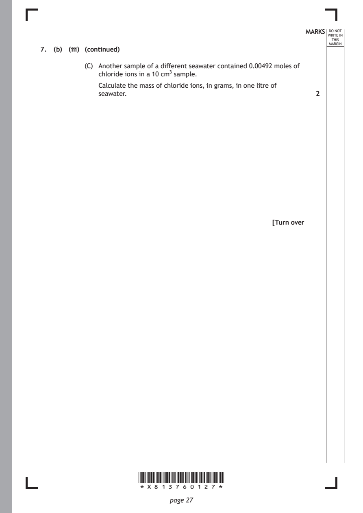
Selectable page text
MARKS _{W}^{D}_{R}^{O}_{I} _{T}^{N}OT
E IN
THIS
MARGIN
7. (b) (iii) (continued)
(C) Another sample of a different seawater contained 0.00492 moles of
chloride ions in a 10 cm³ sample.
Calculate the mass of chloride ions, in grams, in one litre of
seawater. 2
[Turn over
*X813760127*
page 27PDF page 28
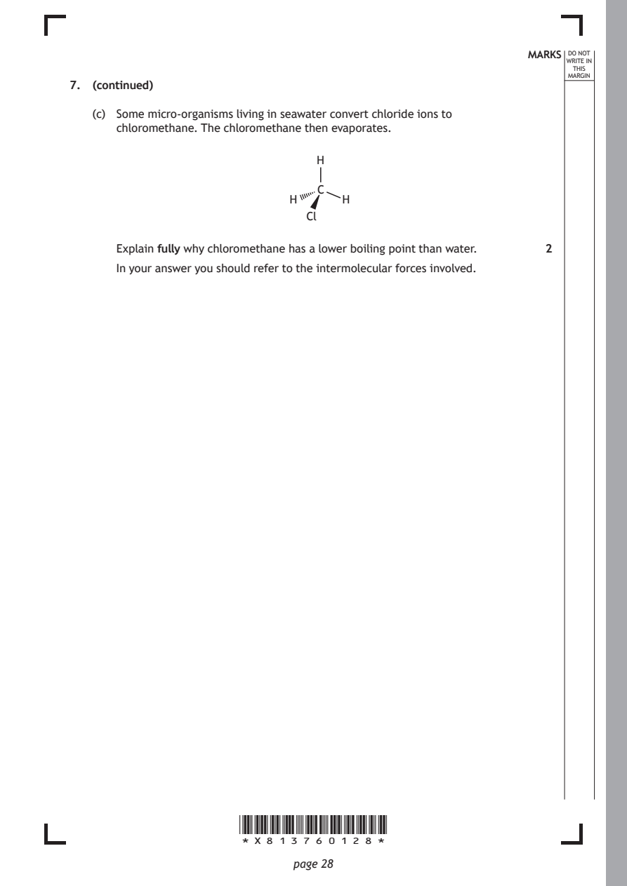
Selectable page text
MARKS _{W}^{D}_{R}^{O}_{I} _{T}^{N}OT
E IN
THIS
MARGIN
7. (continued)
(c) Some micro-organisms living in seawater convert chloride ions to
chloromethane. The chloromethane then evaporates.
H
C
H H
Cl
Explain fully why chloromethane has a lower boiling point than water. 2
In your answer you should refer to the intermolecular forces involved.
*X813760128*
page 28PDF page 29
Paper 2, Question 8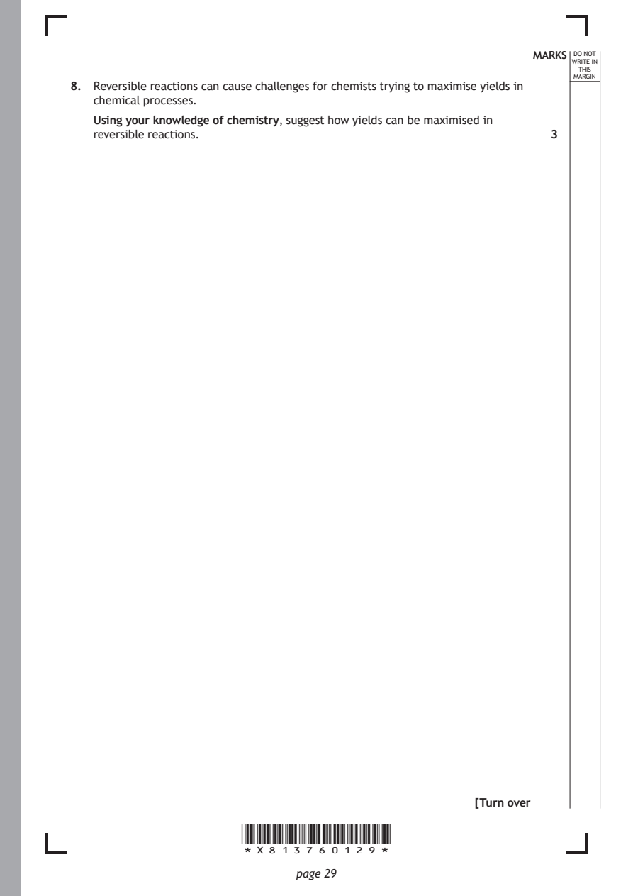
Selectable page text
MARKS _{W}^{D}_{R}^{O}_{I} _{T}^{N}OT
E IN
THIS
MARGIN
8. Reversible reactions can cause challenges for chemists trying to maximise yields in
chemical processes.
Using your knowledge of chemistry, suggest how yields can be maximised in
reversible reactions. 3
[Turn over
*X813760129*
page 29PDF page 30
Paper 2, Question 9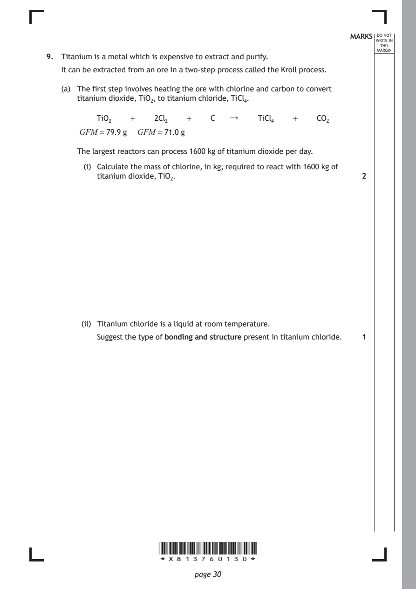
Selectable page text
MARKS _{W}^{D}_{R}^{O}_{I} _{T}^{N}OT
E IN
THIS
MARGIN
9. Titanium is a metal which is expensive to extract and purify.
It can be extracted from an ore in a two-step process called the Kroll process.
(a) The first step involves heating the ore with chlorine and carbon to convert
titanium dioxide, TiO₂, to titanium chloride, TiCl₄.
TiO₂ + 2Cl₂ + C ↓ TiCl₄ + CO₂
GFM = 79.9 g GFM = 71.0 g
The largest reactors can process 1600 kg of titanium dioxide per day.
(i) Calculate the mass of chlorine, in kg, required to react with 1600 kg of
titanium dioxide, TiO₂. 2
(ii) Titanium chloride is a liquid at room temperature.
Suggest the type of bonding and structure present in titanium chloride. 1
*X813760130*
page 30PDF page 31
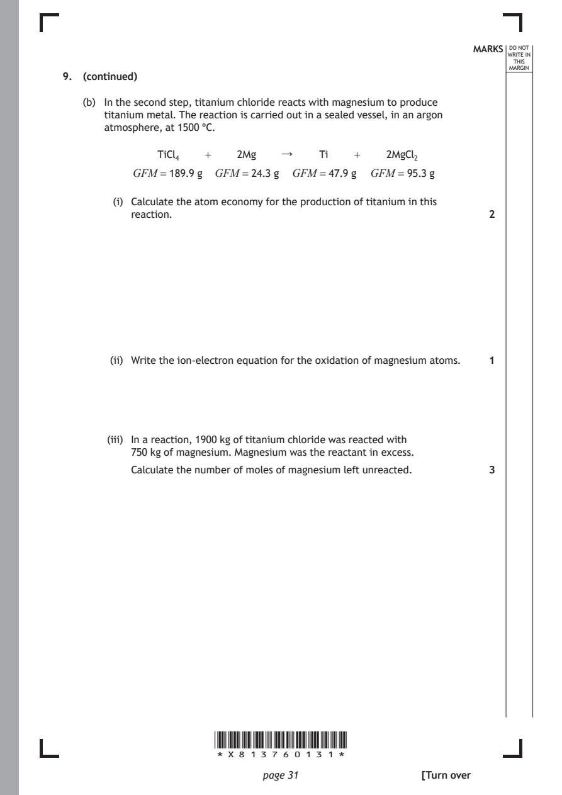
Selectable page text
MARKS _{W}^{D}_{R}^{O}_{I} _{T}^{N}OT
E IN
THIS
MARGIN
9. (continued)
(b) In the second step, titanium chloride reacts with magnesium to produce
titanium metal. The reaction is carried out in a sealed vessel, in an argon
atmosphere, at 1500 °C.
TiCl₄ + 2Mg ↓ Ti + 2MgCl₂
GFM = 189.9 g GFM = 24.3 g GFM = 47.9 g GFM = 95.3 g
(i) Calculate the atom economy for the production of titanium in this
reaction. 2
(ii) Write the ion-electron equation for the oxidation of magnesium atoms. 1
(iii) In a reaction, 1900 kg of titanium chloride was reacted with
750 kg of magnesium. Magnesium was the reactant in excess.
Calculate the number of moles of magnesium left unreacted. 3
*X813760131*
page 31 [Turn overPDF page 32
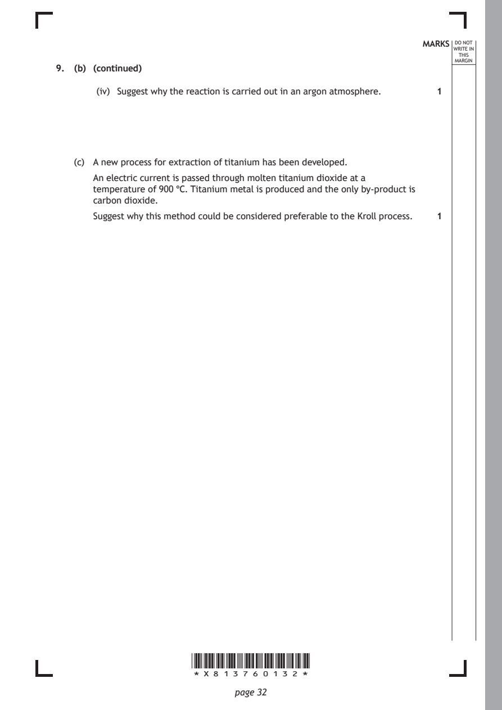
Selectable page text
MARKS _{W}^{D}_{R}^{O}_{I} _{T}^{N}OT
E IN
THIS
MARGIN
9. (b) (continued)
(iv) Suggest why the reaction is carried out in an argon atmosphere. 1
(c) A new process for extraction of titanium has been developed.
An electric current is passed through molten titanium dioxide at a
temperature of 900 °C. Titanium metal is produced and the only by-product is
carbon dioxide.
Suggest why this method could be considered preferable to the Kroll process. 1
*X813760132*
page 32PDF page 33
Paper 2, Question 10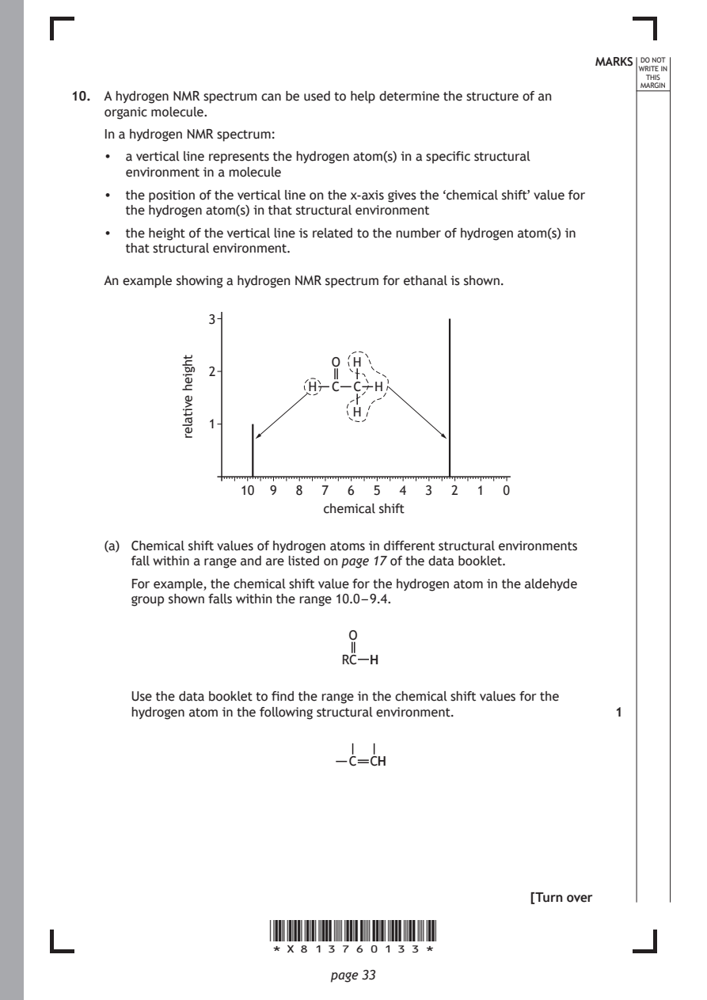
Selectable page text
MARKS _{W}^{D}_{R}^{O}_{I} _{T}^{N}OT
E IN
THIS
MARGIN
10. A hydrogen NMR spectrum can be used to help determine the structure of an
organic molecule.
In a hydrogen NMR spectrum:
• a vertical line represents the hydrogen atom(s) in a specific structural
environment in a molecule
• the position of the vertical line on the x-axis gives the ‘chemical shift’ value for
the hydrogen atom(s) in that structural environment
• the height of the vertical line is related to the number of hydrogen atom(s) in
that structural environment.
An example showing a hydrogen NMR spectrum for ethanal is shown.
3
2
1
10 9 8 7 6 5 4 3 2 1 0
chemical shift
*X813760133*
page 33
thgieh
evitaler
O H
H C C H
H
(a) Chemical shift values of hydrogen atoms in different structural environments
fall within a range and are listed on page 17 of the data booklet.
For example, the chemical shift value for the hydrogen atom in the aldehyde
group shown falls within the range 10.0 – 9.4.
O
RC H
Use the data booklet to find the range in the chemical shift values for the
hydrogen atom in the following structural environment. 1
C CH
[Turn overPDF page 34
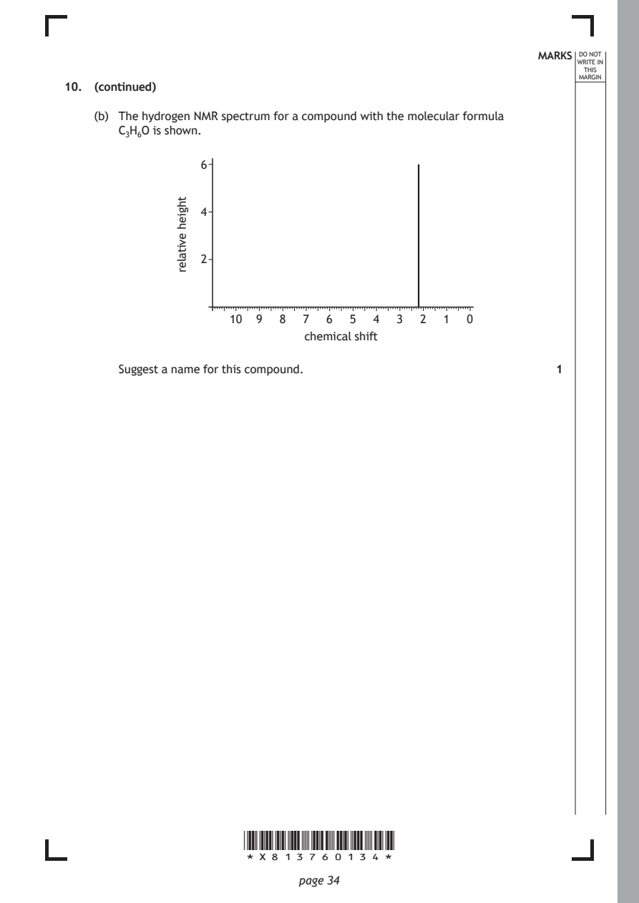
Selectable page text
MARKS _{W}^{D}_{R}^{O}_{I} _{T}^{N}OT
E IN
THIS
MARGIN
10. (continued)
(b) The hydrogen NMR spectrum for a compound with the molecular formula
C₃H₆O is shown.
6
4
2
10 9 8 7 6 5 4 3 2 1 0
chemical shift
*X813760134*
page 34
thgieh
evitaler
Suggest a name for this compound. 1PDF page 35
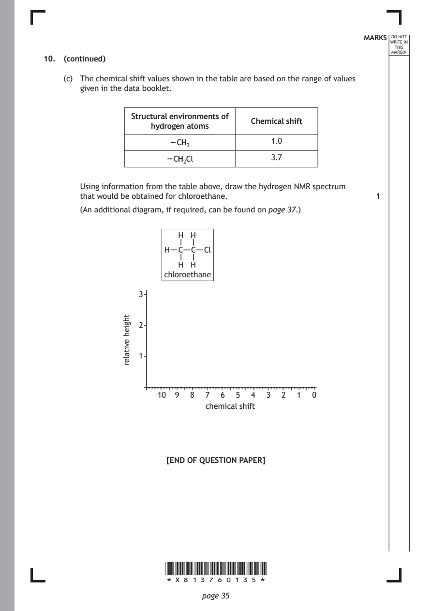
Selectable page text
MARKS _{W}^{D}_{R}^{O}_{I} _{T}^{N}OT
E IN
THIS
MARGIN
10. (continued)
(c) The chemical shift values shown in the table are based on the range of values
given in the data booklet.
Structural environments of
Chemical shift
hydrogen atoms
–CH₃ 1.0
–CH₂Cl 3.7
Using information from the table above, draw the hydrogen NMR spectrum
that would be obtained for chloroethane.
(An additional diagram, if required, can be found on page 37.)
H H
H C C Cl
H H
chloroethane
3
2
1
10 9 8 7 6 5 4 3 2 1 0
chemical shift
*X813760135*
page 35
thgieh
evitaler
1
[END OF QUESTION PAPER]PDF page 36
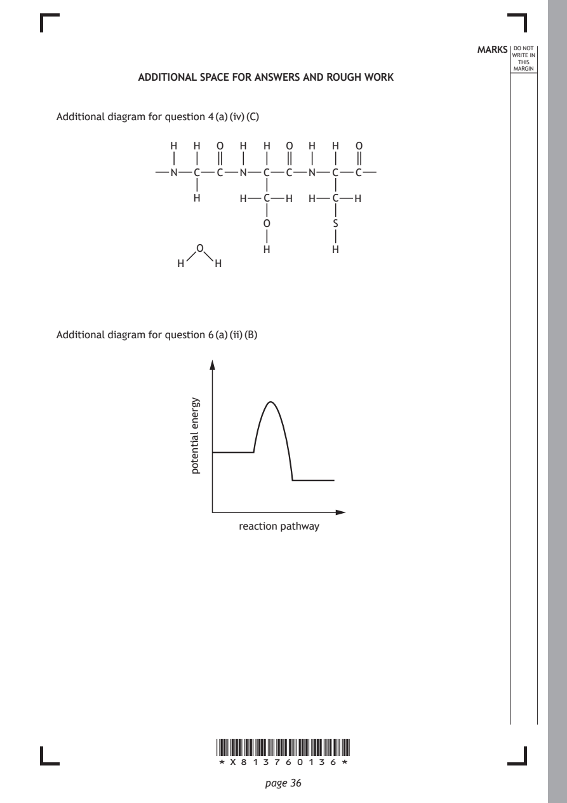
Selectable page text
MARKS _{W}^{D}_{R}^{O}_{I} _{T}^{N}OT
E IN
THIS
MARGIN
ADDITIONAL SPACE FOR ANSWERS AND ROUGH WORK
Additional diagram for question 4 (a) (iv) (C)
H H O H H O H H O
N C C N C C N C C
H H C H H C H
O S
O H H
H H
Additional diagram for question 6 (a) (ii) (B)
reaction pathway
*X813760136*
page 36
ygrene
laitnetopPDF page 37
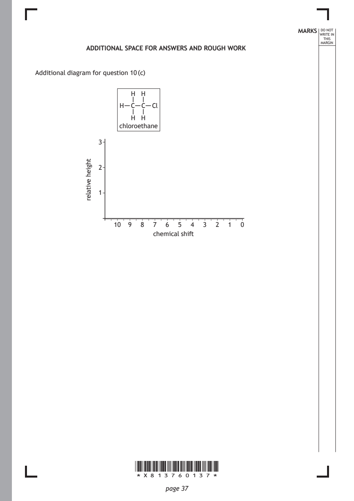
Selectable page text
MARKS _{W}^{D}_{R}^{O}_{I} _{T}^{N}OT
E IN
THIS
MARGIN
ADDITIONAL SPACE FOR ANSWERS AND ROUGH WORK
Additional diagram for question 10 (c)
H H
H C C Cl
H H
chloroethane
3
2
1
10 9 8 7 6 5 4 3 2 1 0
chemical shift
*X813760137*
page 37
thgieh
evitalerPDF page 38
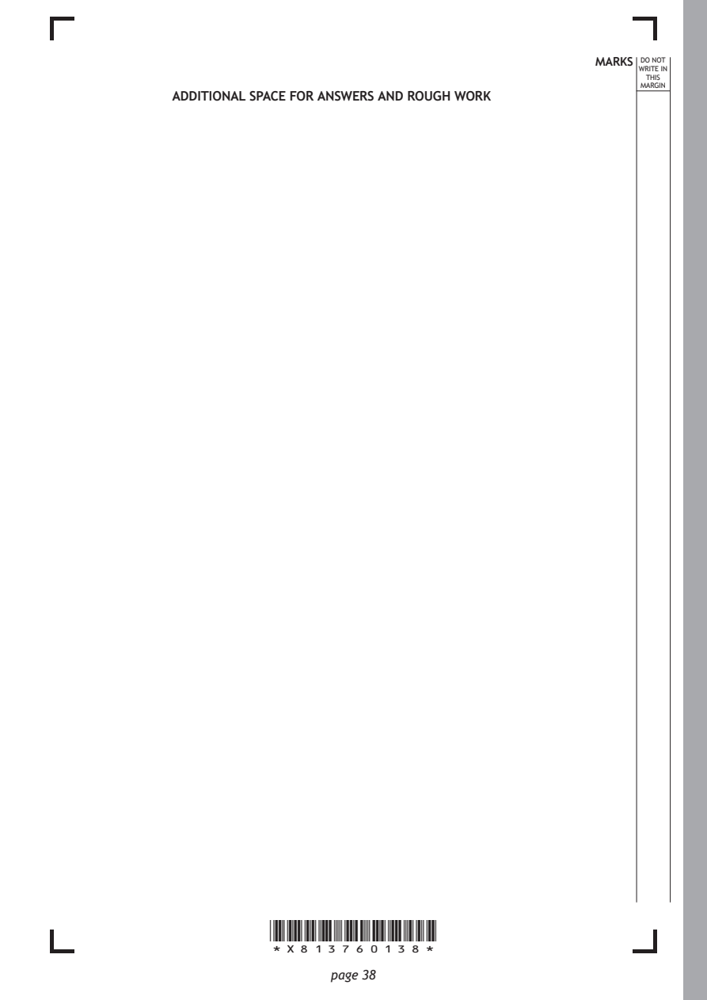
Selectable page text
MARKS _{W}^{D}_{R}^{O}_{I} _{T}^{N}OT
E IN
THIS
MARGIN
ADDITIONAL SPACE FOR ANSWERS AND ROUGH WORK
*X813760138*
page 38PDF page 39
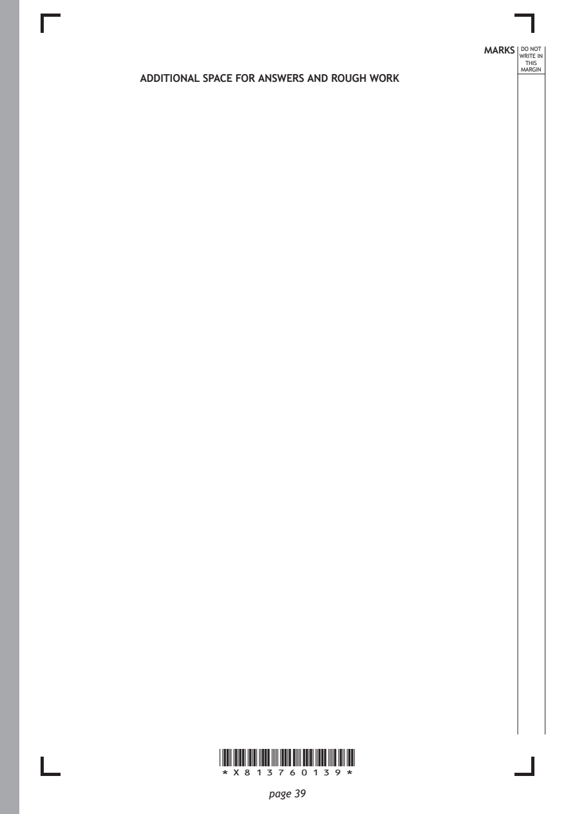
Selectable page text
MARKS _{W}^{D}_{R}^{O}_{I} _{T}^{N}OT
E IN
THIS
MARGIN
ADDITIONAL SPACE FOR ANSWERS AND ROUGH WORK
*X813760139*
page 39PDF page 40

Selectable page text
[BLANK PAGE]
DO NOT WRITE ON THIS PAGE
*X813760140*
page 40